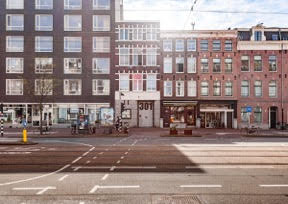
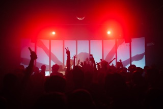
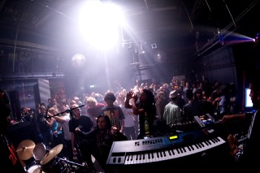

This article aims to portray OT301 as the space that it is today: a cultural hotspot in Amsterdam. Questioning its narrative as an autonomous space, we want to engage with OT301’s history and current state of affairs. We want to thank Ivo, one of the co-founders of Amsterdam Alternative and part of OT301’s team, for answering all of our questions and providing photographs.
Back in the 1980s, the squatting movement emerged in the Netherlands due to a lack of affordable housing. ‘Squatting’ is what most would describe as occupying, living, in an abandoned building; not just out of necessity, but as an explicitly political act.
Along the busy Overtoom street in the Vondelpark neighborhood, tourists and locals alike walk right past one of the most famous squatted spaces in Amsterdam: Overtoom 301, or: OT301. Telling others about OT301 is difficult: it used to be a squat, but it is not anymore. It’s not just a restaurant, not just a club, not just a cultural center, not just an art space. In the words of Ivo, the building on the Overtoom is a “non-profit project in which public functions, work spaces and housing are combined to contribute to the fields of art, politics and subculture”.
It is a combination of all things screaming life. Non-profit and self managed, OT301 provides space for living, working, and public functions. Some may know De Peper, its vegan restaurant. Or Cinema of the Dam’d, the alternative cinema on the second floor. Or Progress Bar, a monthly club night dedicated to communal desire and collective joy. Or engaging in Contact Improvisation courses. Or yoga courses. Or dance workshops. Or the 4bid gallery, an art gallery and workshop.
Squatting is part of the city’s identity. The OT301 serves as a physical reminder, a presence in public life, of this inherently political movement. The space was first squatted in 1999 by a group of artists, which had originally formed a collective in what is now the OLVG in Amsterdam East, squatted in 1997. Upon eviction, about a hundred people lived in the OLVG. While the physical space was no longer there, the idea of art, and community, and autonomy lived on as a small part of the group formed the foundation EHBK (First Aid In Case of Art). According to Ivo, “that same group decided to look for a new space to continue what was started in the OLVG. That building became the OT301. The Film Academy of Amsterdam had just moved to another place in the centre and for us this building was perfect because it had the kind of infrastructure that we were looking for.”
Since 1999, the building at Overtoom 301 has developed from simply being a squat to being rented to ultimately being owned by the squatters themselves. While buying the building ensured the long term openness and presence of an alternative project combining art, politics, and subculture in Amsterdam, it also led to some of the original squatters leaving. According to Ivo, “they wanted to be squatters instead of owners”. This problem is something constantly discussed within the team: how to stay true to the original ideals, despite being an owners and no longer a squatters. One remarkable feature of the team’s structure might have made these discussions more difficult and time consuming, but just goes to show how alternative OT301 really is: there is no boss, “the group is the boss.” OT301 proclaims itself as a communal space, and that seems to not just apply to its programming, but also to its management. Nobody can just change things, everything is discussed together. This horizontal organization structure also results in a highly adaptive atmosphere. According to Ivo, “we change every year, we adapt to things, to the world around us while not losing track of what we believe in.”
In recent years OT301 has received more and more appreciation. When I first arrived to Amsterdam, I didn’t know about this space at all, not until my best friend came to visit and made it part of her sightseeing tour. OT301, a tourist attraction? Part of the city’s cultural mainstream? The project received the Amsterdam prize for the Arts in 2007. Given its evolution from a squatted building to a non-profit, subcultural space, the question of how to stay true to the ideals of the original squatting collective remains unanswered. In the first few years, as OT301 was just emerging, the collective was constantly in conflict with the government, only to later receive this prize. For them, it was definitely a weird moment, being told suddenly that you, your project, are important to Amsterdam. And it seemed to be rather fleeting. According to Ivo, “Amsterdam has become more conservative over the years. All the things that Amsterdam is/was famous for and that make most people of Amsterdam (still) proud have almost disappeared. Very slowly, Amsterdam transitioned from being an adventurous, open-minded, (sub)cultural, inclusive and diverse city into a boring monoculture.”
OT301 is under the guardianship of Amsterdam Alternative (AA). This is a development, places like OT301 disappearing, that they have witnessed all around Amsterdam. Amsterdam Alternative connects OCCII, Plantage Dok, Ruigoord, and many more non-profit and self-managed places, believing in an alternative cultural programme for the city to the commercial mainstream. For the founders of AA, “Amsterdam needs alternative places, Amsterdam needs to have autonomous zones, places to experiment, and to try new things.” But being non-commercial is difficult, and the venue still has to constantly adjust to stricter and changing licensing (as a public space) rules.
“Sometimes it is very difficult to keep your head above water, sometimes things are going very well. It is part of the process. A building/organisation like this is a process anyway. There is no end goal. It is a living organism that changes because it is made out of different people.”
On the website of this living organism, in the about section, you will stumble across a section titled Autonomy - The Right to Self Determination. Not surprising considering the independent space OT301 is seen as. But autonomy is complex, and means very different things to different people. What does it then mean to OT301 to be autonomous? “Autonomy is a difficult term. Its meaning has changed over the last 40 years. For us it means that we try to be as independent as possible. We try to be small scale, self sufficient, open minded, democratic, collective and open to everybody. Our building is owned by the collective. So nobody has individual ownership of the building. When you leave the collective you can not sell anything. The group will decide who will take your place. That collective ownership is something valuable and helps us to remember what we are doing, and that we are responsible for our building and organization ourselves. So the autonomy is many different little aspects of what we do, how we do it and who we are,” says Ivo.
Some might disagree with this statement. How autonomous is collective autonomy, compared to the independence of the artist? There is a tension, between functioning as a collective and individual artistic freedom.
How did a squatting collective, part of a radical political movement, come to own a building, property? Is it abandoning its ideals, or turning them into something very much present, real, physical in the city?
Its programming is essential to navigating this tension: “What I like most about the OT301 is that we combine lots of things. First, and most important we combine living, working spaces for artists and public functions. There is very little places that combine these 3. And I think this combination makes a great dynamic,” explains Ivo. This dynamic is only reflected by the many different things constantly happening. Open 7 days a week with a wide variety of events, workshops, classes, screenings, OT301 is not a techno club, not a cinema, not an art gallery, not a restaurant, not a broedplaats, not a squat. In the words of Ivo, “we are all of those things together.”
Out of the city of Amsterdam in the 1980s emerged a squatting movement and a political collective that created OT301. Its presence in the city for the last 20 years is unique. “Amsterdam’s presence in the OT301 is undeniable but hard to define”, says Ivo, “The OT301 could only have been in Amsterdam.” Because of the city’s squatting movement, its history of alternative spaces; it being a magnet for international creatives. When the project started, the city offered countless possibilities.
Including the squatting movement. For Ivo, “ it is more radical that squatting isn’t allowed anymore” than the movement itself and its values. The OT301 sprung from these ideals, and trying to stay true to it, the non-commercial venue says “Basically everything we do is political”. In offering an alternative to the commercial mainstream such as the expensive clubs of Amsterdam’s nightlife scene, the project prioritizes passion over money. There is not a dichotomy between being a part of a dynamic political movement and existing as a ‘real’, physical, permanent place, at least not for OT301.
“I do not believe in 1 thing or the other. I believe in variation, in diversity, in working together, in doing things you like.” - Ivo
A living organism, variation, subculture, alternative. OT301 seems to fit the stereotype of ‘the outsider’. Some people have never heard of it, and others see it as a fundamental part of Amsterdam. But a stereotype is a single story told, and OT301 is definitely not a single story. It is multiple, intertwined, as the space interacts with creatives and politics and the city. Asked about the future, the team just hopes that it will still exist in 100 years, as a haven for artists and those diverting from what is ‘normal’, as a collective. Simultaneously, they are embracing change, which is integral to the horizontal structure, as a good thing as exciting. As long as they manage to stay true to their ideals, the remnants of the political movement this project emerged from.
Change due to the Coronavirus
Like most public spaces, OT301 has been closed temporarily due to the coronavirus lockdown in the Netherlands. But Ivo says that there are always problems, and each problem comes with new solutions and opportunities. He hopes that the current crisis will somehow help in changing our mentality and the way we look at the world. For him, and for OT301, the crisis can definitely be an opportunity. But it also needs solidarity and creativity, and awareness for the meaning of community, especially for an autonomous space.
Right now, a lot of cultural spaces and community centers are in financial troubles due to the coronavirus outbreak. How have you dealt with the outbreak so far and how has it affected OT301?
Ivo (OT301): We will also be affected by this crisis. It is very hard to say how much but our public spaces will most likely not open any day sooner than 1st of September, and if unlucky even longer. That will have a big effect on us. We will have a lot of discussions already, and many more coming on how to deal with this. Now is the time for solidarity but also to be creative and think of new possibilities and things to do.
What does community mean in times like pandemics and financial losses? Ivo (OT301): I hope it means that we help each other. I hope it means that you are stronger together than alone. But whatever it means, the OT301 is, and will always be a collective. The question is how strong is the collective and how far are people willing to go in helping others. I am 100% sure that the OT301 will survive this crisis but not sure at what cost. It might be possible that people leave. We have a difficult time ahead of us. But I am always optimistic. I believe that in the end we will come out stronger.